‘La indecisión es la llave a la flexibilidad’
|
||
‘La indecisión es la llave a la flexibilidad’
|
|
********************************************************************************************* Newer news can be found on scotlandnews |
| Siete Tazas, February 27, 2005. | ********************************************************************************************* Van and boats sorted, we rejoined the Pan American Highway and headed south. Keep the Andes on the left and the sea on the right, and you can't go wrong. Chile is 5,000 km from north to south and about 15 m wide east to west. For this reason all football pitches here are aligned north to south. The PanAmerican Highway is closed on Saturday afternoons for a period of 45 minutes, then open for 15 minutes, then closed again for a further 45 minutes.Anyway, we went to the Siete Tazas (Seven Teacups), which is a world-renowned classic of simple waterfalls. The name comes from the teacup-shaped pools at the bottom of each drop.Here's a selection of photos from the day. Here's Ferg... 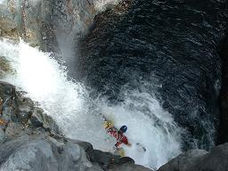 Here's a pair of messers... 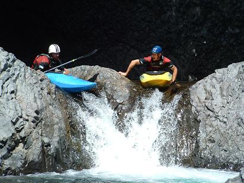 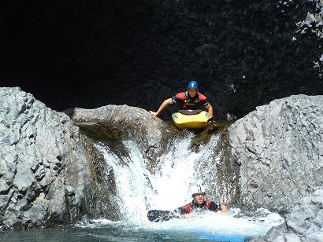 Here's Jim... 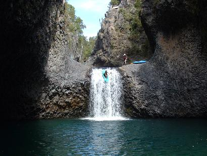 ...and here's Mr. Fred... 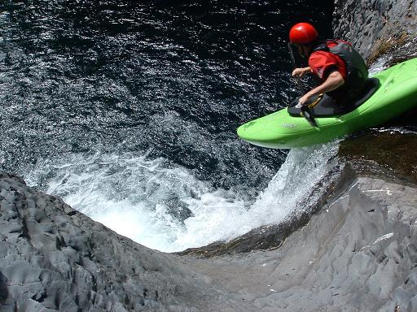 |
| La Chascone, Santiago, Chile, February 25, 2005. | ********************************************************************************************* After racing back to Santiago to continue fighting with Tur Bus and again being disappointed by their inability to transport cargo by bus in a manner befitting of a bus company, the team split up - some for more paragliding and some to Neruda's Santiago residence. According to Ferg, the house is called La Chascone (The Wild-haired One) after Neruda's third wife, and not after Ferg. 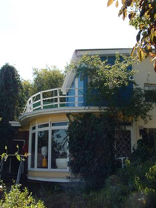 |
| Isla Negra, Chile, February 24, 2005. | ********************************************************************************************* As long-time readers of this site and Outsider Magazine will be aware, Officer Mahony is a huge Pablo Neruda fan. Whenever any of the team have trouble dozing off in the evening, we ask Ferg to quote something by the Chilean poet - he usually obliges with something moving from 'Veinte Poemas de Amor' or perhaps reads us a passage from Neruda's biography 'Confieso que he Vivido.' So we went to Neruda's seaside house in Isla Negra, which is an eccentric hodge-podge of a building with great views... 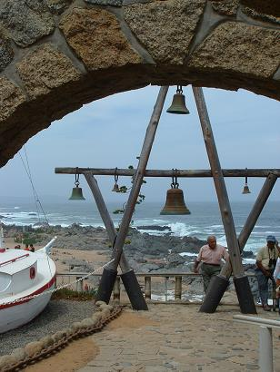 ...and a steam engine... 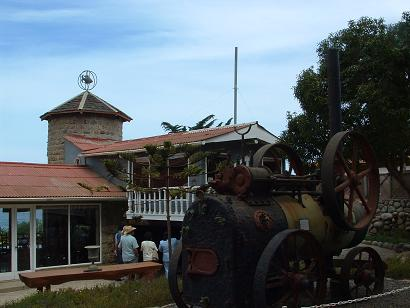 You have to admire a poet who collects steam engines. I'll bet Patrick Kavanagh never had a steam engine outside his gaff. There was some dodgy flying also at Isla Negra... 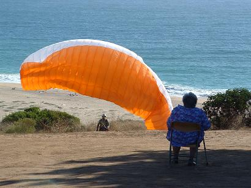 ...and sometimes the photographer gets too close to the action... 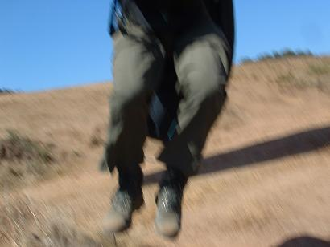 |
| Tur Bus, Santiago, Chile, ten days. | ********************************************************************************************* Tur Bus, the incompetent idiots who promised that our boats would arrive 24 hours behind us in Santiago managed to get them stuck in customs and we spent 10 days trying to retrieve them. Apparently, there was something wrong with their 'documents.' So, when you are traveling by bus in Chile make sure that your kayak's 'documents' are in order. This astounding piece of bureaucratic incompetence had something to do with the customs guys who conducted the optional drug searches. They look at your pile of bags and ask you to nominate which one you would like searched for drugs. Of course, if you have any drugs, you can just leave them on the bus, which isn't searched. 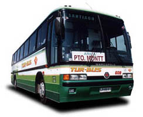 Remember that moronic bus company's name again: Tur Bus. Walk if you have to, it's better. |
| Cafe Mitsubishi, February 21, 2005. | ********************************************************************************************* While Cafe Toyota can never be replaced (although Mr. Fred is doing an admirable job), we feel the need for speed, so we bought a yellow school bus. Here are the boys and Willem the token Dutch bloke outside the hostel in Santiago. Anyone buying or selling carpets? 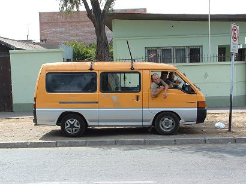 These vans are everywhere in Chile, used as school buses and taxis. It's great fun driving around and having people flag us down all the time. We might be able to defray our petrol costs by picking up passengers on the way south. That is if we don't keep getting lost all the time...
|
| Santiago, Chile, February 17-23, 2005. | ********************************************************************************************* Our main goal in Santiago is to chill out for a while. 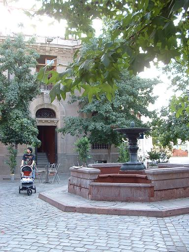 We also need to organise some transport in order to get going south to the rivers. Other goals were to sample the local Chilean red wine, see the sights, and not spend any time on buses. Here's Mr. Fred planning an audacious first descent in Cerro Santa Lucia... 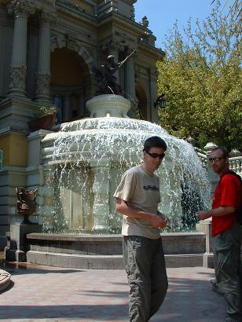 We also hope to persuade Sideshow Ferg to visit a barber... 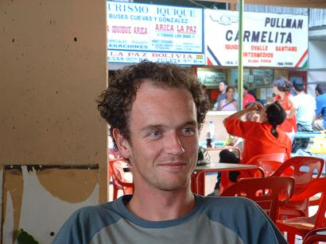 |
| Simon's birthday, February 15, 2005. | ********************************************************************************************* What better way to celebrate your 30th birthday than with a long bus journey? - one hour on the bus for every year of your life. Unforgettable. Here's the birthday boy modelling his Bob Espunja teeshirt. 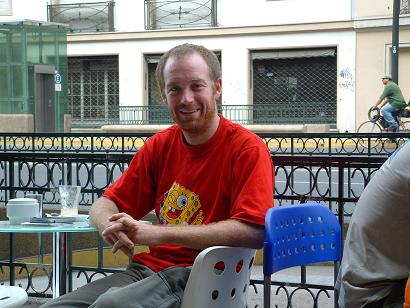 |
| Tacna, Peru, February 14, 2005. | ********************************************************************************************* Tepsa, the inept bus company, couldn't get two of our boats onto the bus at Tumbes, northern Peru near the Ecuadorian border, so we had an enforced stop-over at Tacna, southern Peru, near the Chilean border, for 24 hours, to allow the delayed boats catch up. Luckily this coincided with Saint Valentine's Day, so the four of us had a lovely romantic time at the concert in the plaza. So, apart from four scruffy Irish lads wandering amongst the happy couples in a sea of loveheart balloons, what is there to see in Tacna? There's another Eiffel church and an Eiffel fountain copied from the one in Place de la Concorde in Paris... 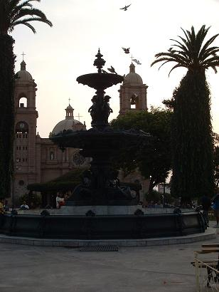 there's a big arch with a statue of Colonel Bolognasi... 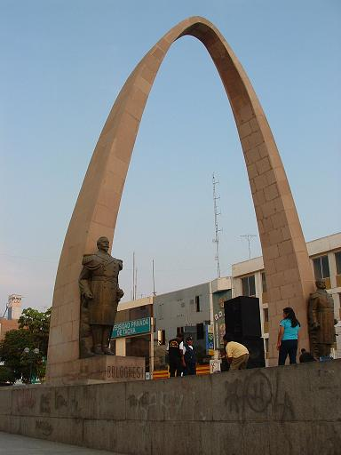 and a steam locomotive used in Peru's war with Chile. This one is for my parents, the steam enthusiasts... 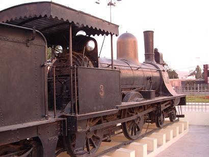 |
| Leaving Ecuador, February 12, 2005. | ********************************************************************************************* Having postponed the dreaded four-day bus journey as long as possible, we finally bite the bullet and get started on the 4,500 km trek to Santiago, Chile. We had decided to hightail it directly to Chile in order to catch the water there before the end of the boating season. Afterwards the plan is to come back north through Peru and Bolivia. It really wouldn't do to pass through those places and only see them through the windows of a bus, or in our case several buses. 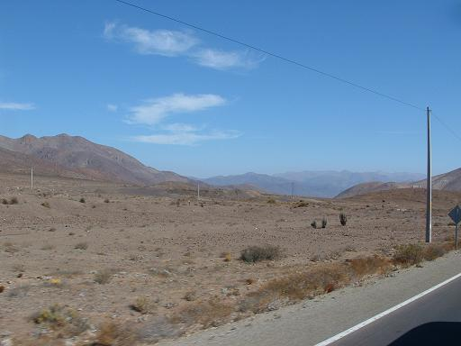 The bus odyssey begins with a relatively painless two-hour warm-up excursion to Rio Bampa and ends with a bum-numbing 30-hour epic through northern Chile. In between there were four other buses, as well as assorted taxis, border crossings, bad bus food, and several heated discussions with bus company lackeys reluctant to find space for kayaks. Eighty two hours on buses - not recommended. Ever wondered why bus depots are full of mad people talking to phone boxes or babbling about God? It's because they have travelled too long down the back of a bus, wedged between screaming babies and the blocked toilet. Here's what they don't like about us: Four kayakers, four kayaks, four rucksacks, four day packs, three paragliders, bag of paddles. 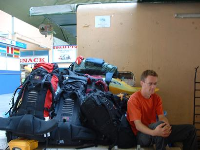 Somewhere on the way, in the middle of the night, Cliona slipped away into the darkness as mysteriously as she had appeared. Bereft of a civilising female influence, we quickly reverted to type. 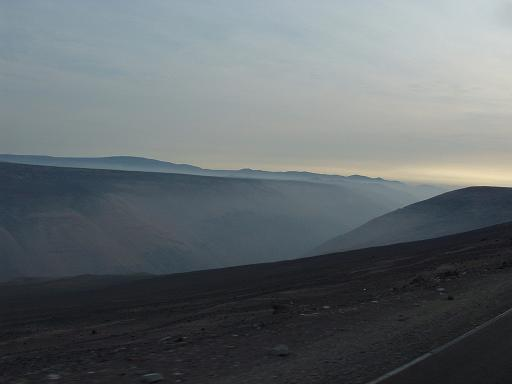 |
| Cotopaxi, Ecuador, February 8-10, 2005. | ********************************************************************************** *********** Sigh. Here is the result of the Big Mountain Challenge: Cotopaxi 5: Scotland '04+1 0. The team was utterly defeated by a huge mountain. Cotopaxi is a 5,800 m volcano just south of the equator. It's complete with glacier, year-round snow, and a distinct lack of oxygen. One of the traditional day-off activities of all Scotland trips is the obligatory hike up the largest mountain we can find. We did Cotopaxi all the right way - three-day, fully-guided trip with all gear, guides, and acclimatisation. Amazing trip - completely opened our eyes about that stuff. 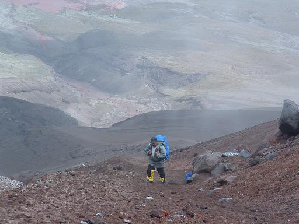 The refuge where we spent the night before the ascent is at the height of Mont Blanc's summit. We arrived at the National Park at noon Tuesday (3,800 m) and went for a short hike on the level bed of a dry lake. In the thin air, you become breathless if you try to jog or climb a slight hill. All in bed by 7 PM. 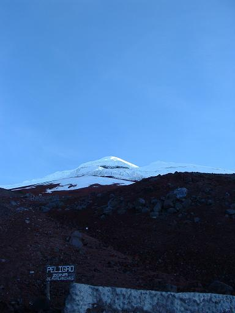 The next morning we drove an hour up to 4,300 m. It then took an hour to cover about 2 km horizontal and 250 m in vertical distance. A very sudden and exhausting wake-up call. We ate and slept, and then went to the glacier to practice with crampons and ice axes. By 6 PM Mr. Fred was in pieces with altitude sickness (headache and throwing up) and had to go back down with one of our guides. We then slept until midnight, the planned beginning time for the estimated six hours climb to the top. Ferg was sick as a dog, worse than Mr. Fred. He had to go down. They are very strict about guide-punter ratios around here, so one of the remaining (relatively) healthy people had to go down also. After a round of rock-paper-scissors between Jim, Simon, and Cliona, it was decided that Jim had to go down too. In our exhausted state, it is still undecided if Jim won or lost in this instance. At about 1 AM, Simon and Cliona, along with the two remaining guides, set out for the summit, it has to be said not with 100% confidence. They made it to a creditable 5,300 m by 3:30 AM, before complete exhaustion, blinding headaches, lack of sleep, and oxygen deprivation forced them back too. 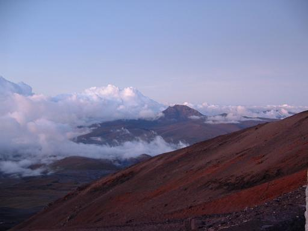 We are all a little humbled by the experience and have developed a (grudging) respect for climber types. A fantastic experience, but only in hindsight. At the time, we just wanted to get it done, up or down. |
| Canoa, Ecuador, January 27 - February 1, 2005. | ********************************************************************************** *********** After an exhausting series of rivers, the cry went up from the masses: "Beach! Beach! Beach!" So we went to the beach, again. Soon we were joined by Team Scotland (following us around like a bad smell), Jam (who continues to be trapped in Ecuador without a passport), and Cliona (direct from Machu Picchu). 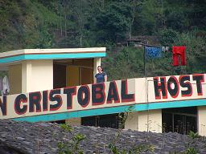 A full itinerary of beach activities ensued, ranging from sitting on the sand to sitting out the back of the surf. In both instances, the important thing was to work on our tans. Other days we walked on the beach. 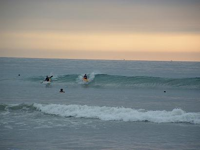 The boys even went flying over the beach. 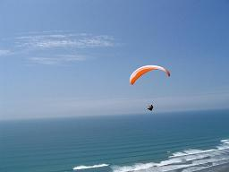 We watched the sun set on the beach a number of days in succession. As the glowing orb subsided over the tropical waters, we pondered: 'When did we lose our enthusiasm for participating in exercise and motion-based activities?� 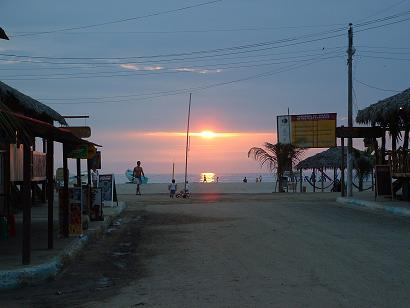 After such deep thoughts, we had another few drinks at the bar on the beach. |
| Pan Pipes, Everywhere in the Andes, all the time. | ********************************************************************************** *********** The pan pipes have to be the greatest crime against music ever inflicted on the average man. Having survived Marimba and Mariachi music so far, Heavens resolve our mettle to survive this added trauma, which will surely only worsen as we continue higher into the mountains. Surely there is no good reason for the 'haunting' strains of Beatles standards such as the elevatoresque Let It Be, irritating enough in the original, funnelled through the reedy homogenising effect of those pathetic little bamboo sticks. A certain musically-discerning member of the team is firmly convinced that no jury in the world, outside the Andes, would every convict anyone for shoving some pest's pipes up that pest's pipe. |